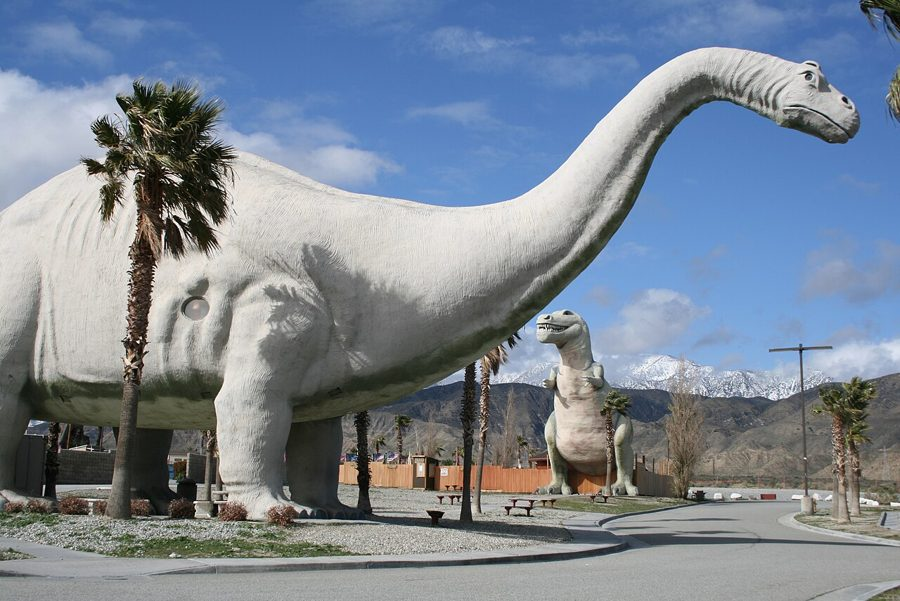

1. Dinny & Mr. Rex · Cabazon, California
Right off Interstate 10 near Palm Springs stand a 150-foot-long Brontosaurus named Dinny and a 65-foot-tall Tyrannosaurus named Mr. Rex. They were built to lure hungry drivers into the Wheel Inn restaurant next door. Dinny took from 1964 to 1975, and Mr. Rex was finished in 1986. Their steel and cement were salvaged from freeway construction. Movie fans know them from Pee-wee's Big Adventure (1985).
Who made them: Claude K. Bell (1896–1988) grew up in Atlantic City, where he made sand sculptures of teddy bears on the beach for tips. Seeing Lucy the Elephant, a building shaped like an elephant, made him want to build “something big like that” one day. From 1947 he made concrete figures for Knott's Berry Farm, and he ran its portrait studio from 1951 to 1986. He spent more than twenty years and his own savings on his dinosaurs, and died in 1988 at 91.